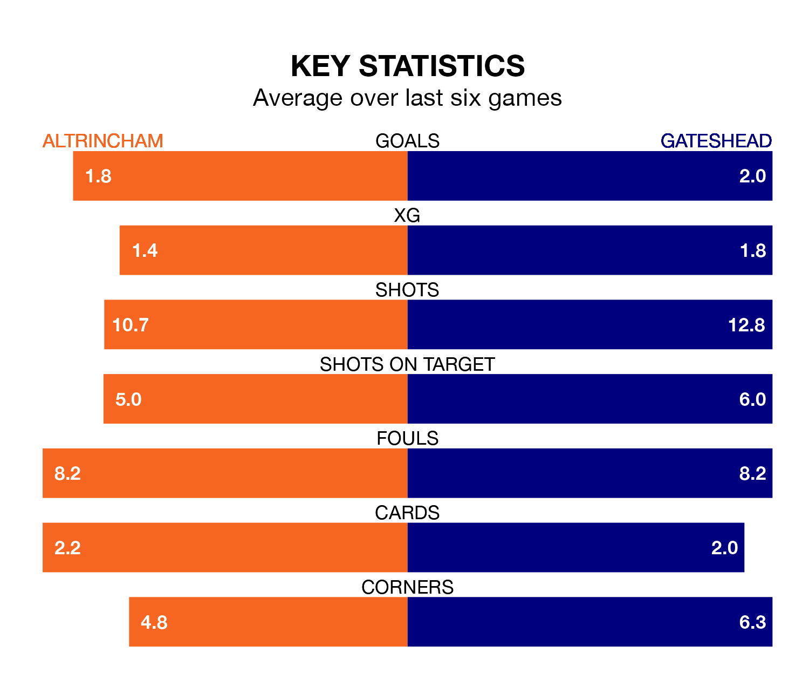

Saturday's match between Altrincham and Gateshead promises to be one for the neutrals, as two of the National League's most free-scoring sides go head-to-head.
Ahead of the game at the J. Davidson Stadium, Robins and the Tynesiders sit joint-third and second in the goal-scoring charts, with 71 and 72 goals respectively.
Midfielder Christopher Conn leads the way for the home side, having bagged 20 goals in their 39 games to date.
And Marcus Dinanga Nyamabu has been the main man in the opponents' penalty box for Gateshead, with 18 goals.
In the last 10 years, Altrincham and Gateshead have played each other on 13 occasions. Altrincham won three of them, Gateshead seven, and they drew three times.
On average, Robins scored 1.5 goals and the Tynesiders 1.5 in those matches.
Their last meeting was on October 7, when Altrincham won 2-0 away.
Altrincham are eighth in the table after 39 games, of which they have won 17 and drawn 10, earning 61 points.
Gateshead are one place behind Robins in ninth, with 17 wins and nine draws putting them on 60 points.
The home team are in mixed form in the National League, with three wins and three losses from their last six games.
With two wins and a draw over that period, the Tynesiders's form is slightly worse – they have taken seven points from 18, compared to Altrincham's nine.
Altrincham's last match was on March 16, a 1-0 win against Boreham Wood, with Conn-Clarke getting the goal for Robins.
Gateshead lost 4-2 against Ebbsfleet United last time out, also on March 16, with Callum Whelan on the scoresheet.
Updated: 10:19 (UTC), 22/03/24